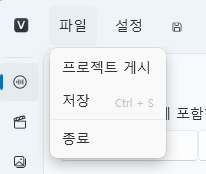

Loading & Saving Projects¶
This document explains how to load, save, and manage projects in VoiceScriptPlayer.
1. Loading a Project¶
Existing projects can be loaded from the Project List (tile view) on the main screen.
You cannot open a new project while the editor is running —
please close the current editor window and return to the home screen first.
🔹 How to Load a Project¶
- Close the editor window and return to the Home Screen.
- In the Project List (tiles), find the project you want to open.
- Click the Edit button on that project tile to open it automatically.
- Recently modified projects are also displayed at the top under “Recently Edited List.”
⚠️ Note:
VoiceScriptPlayer cannot open multiple projects simultaneously.
You must close the current project before opening another one.💡 Tip:
Projects are saved automatically and remain listed until deleted manually.
You can edit titles, tags, and descriptions directly from the home screen.
2. Saving a Project¶
VoiceScriptPlayer allows you to save your work at any time and also supports auto-save.
| Save Method | Description |
|---|---|
| Save (Ctrl + S) | Instantly saves the current project state. |
💡 Tip:
Resource files are applied independently of the save operation.
3. Resource Management¶
In VoiceScriptPlayer, resources are not managed in a single “Explorer”-style window.
Instead, each resource type has its own dedicated tab for independent management.
🔹 Resource Tabs Overview¶
The top bar of the project window includes the following resource management tabs:
| Tab Name | Description |
|---|---|
| 🎵 Sound | Import audio files (.mp3, .wav) and perform subtitle generation/editing, translation, and TTS synthesis. |
| 🎬 Video | Add video files (.mp4, .mov) and perform subtitle generation, translation, and synchronization editing. |
| 🧍 Live2D | Import and configure character models (.model3.json) and motion files. |
| 🧩 UI | Arrange and edit user interface components such as buttons, images, and text. |
| 💬 Script | Define and control interactive logic using variables, triggers, and conditionals. |
| ✏️ Stroke | Import and configure timeline-based stroke patterns. |
| ✨ Special Events | Provides predefined special events for quick use. |
| 📦 Resource Management | Manage global project resources (variables, images, Live2D assets, translation dictionaries, etc.) in one place. |
🔹 Adding Resources¶
- Go to the desired resource tab (e.g., Sound, Video, Live2D).
- Click the [Import] button at the top to add files.
- The resource will appear in that tab’s list and automatically be copied to the appropriate location inside the project folder.
⚙️ Note:
Each resource is managed independently within its own tab.
Imported files are automatically organized into subfolders (e.g.,Video/,UI/,Trigger/, etc.).
You do not need to specify paths manually.
🔹 Editing & Deleting Resources¶
- Selecting a registered resource in any tab shows its detailed settings in the right panel.
- Changes are applied in real time and saved automatically — no manual saving required.
- To remove a resource, click the [Delete] button.
(The corresponding file will also be cleaned up from the project folder.)
💡 Tip:
Each resource tab works independently, so editing one resource won’t affect others.
For example, while editing a sound, your UI tab layout remains unchanged.
4. Exporting & Sharing¶
VoiceScriptPlayer allows you to distribute projects to others
or publish them in a playback-only format that cannot be edited.
📁 Open Project Publishing¶

You can access the publishing feature from the top menu via [File → Publish Project].
Clicking this opens the publish configuration window.
🗂️ Publish Settings Window¶

In the publish window, you can configure the following options:
| Option | Description |
|---|---|
| Select Location | Choose the folder path where the project will be published. |
| Include Resources | Select which resources to include in the published project. Use the right arrow (→) to exclude or the left arrow (←) to include items. |
Once publishing is complete,
a read-only playable version of the project folder will be generated in the selected location.
⚙️ Note:
Projects are not compressed during publishing.
The internal structure (Video/,UI/,Trigger/, etc.) is preserved,
and the published project can only be run in VoiceScriptPlayer Player.
🎧 Excluding Copyrighted Audio¶
During publishing, copyrighted audio (e.g., commercial BGM or voice assets)
can be excluded from the “Include Resources” list.
- Excluded audio files will not be copied into the published folder.
- During playback, users can manually specify the location of these files.
- This allows safe distribution of projects while protecting copyrighted materials.
💡 Tip:
Clean up copyrighted resources before publishing
so others can open and play the project without missing files or errors.
📦 Export Options Summary¶
| Function | Description |
|---|---|
| Publish Project | Exports a folder version — playback only, editing disabled. |
| Export Project | Copies or backs up the entire project. |
| Build Player Export | Builds a standalone executable for full independent playback. |
5. Backup & Version Control¶
To ensure stability, it’s recommended to back up and version your projects regularly.
- Recommended Folder:
Organize each project into its own folder inside
Documents/VoiceScriptPlayer/Projects/.